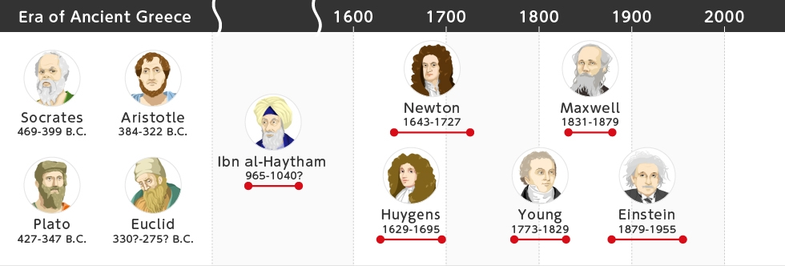
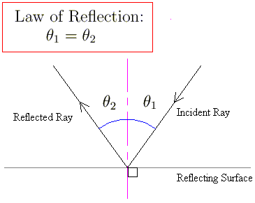

The rendering equation
James Kajiya, 1986
Part of the "Sunday Classic Paper" series. Read other posts on the blog Statistical Intuitions
Introducing - The Sunday Classic Paper!
As a part of a new move to read papers I wouldn't otherwise read, I am starting a new series called Sunday Classic Paper. Which is basically me forcing myself to read an interesting classic paper every week. This post covers the seminal paper in Computer Graphics - "The Rendering Equation", by James Kajiya of Caltech, written in 1986.
Section 1: Background/Context
The paper we are dealing with today is from Computer Graphics and is at the heart of pretty much every media you consume - from animated movies by Disney, to all those CG scenes you see in movies like the Avengers. And my goal is to make it accessible to anyone who is willing to read it through - no prior experience in graphics or science needed.Background of Computer Graphics (how to make things look realistic)
The goal of computer graphics is to re-create the real world. Let us see the picture of the car below, and see how would the process of an animator/graphic designer re-creating it using computer graphics. While I could ask a designer for a picture of a "Ford mustang on a road, with water and trees in the background", surely, chances are very low they will be able to create exactly what's in this picture. So, how do we completely describe the contents of this scene? In layman terms, it seems natural to describe based on the objects in the scene, their colors, right? So, can we describe that car as a red mustang and call it a day?
Not quite. For example, it is easy to tell from the shadow where the sun was when this photo was taken, wait a couple hours and while the car will still be the same, it will look very, very different in the picture taken - because the direction of sunlight falling on it would have changed. Needless to say, two different cameras or even two different photographers with the same camera would also capture a different picture even if everything (including time of day) was the same. That's because the cameras would have different lenses, which would capture a different version of the scene. Let's think about this a second - what does the camera even "capture"? The answer, as you might have guessed it, is that light passes through the camera's lens, and is captured by a sensor inside the camera which is sensitive to light. In fact, what had changed when the sun moved - Direction of the sun light. Why is there that shadow on the road - the car is blocking the sunlight from reaching that part of the road. Why is the color of the car bonnet yellower than the side of the car facing us - there's more sunlight on the bonnet and sunlight is yellow in color (it's technically white when it starts from the sun, yellow by the time it reaches us, but more on that later). Why are trees green in color - because it absorbs all other colors of light but reflects green out - so light reflected by it that reaches our eyes is green
So, at the end of the day, all that is happening is movement of light. Light comes from a source (sun here), falls on objects which act on the light through different processes we have studied in high school physics, and the processed light reaches our eyes or a camera, which is what we call "seeing". So, if what makes a scene/picture real is how light is behaving in the scene, and we want to make things realistic in computer science ,it makes sense that we would have to mimic how light bedo we need to know all the physics in the world to do computer graphics? Do we actually model. Thus, in order to completely re-create that picturem we would need to completely simulate the object shapes/surfaces and their interactions with light falling on them. Seems complicated? Don't worry, section 3 below will walk you through it without any scary physics or mathematics.
All the physics of light you need
The statement "the nature and movement of light is incredibly easy to understand" might be blasphemy for a physicist, and rightly so. Mellenia of philosophers/methematicians/physicists have spent years trying to unravel the mysteries of how light moves or interacts with matter, and the answer, in short, is pretty complicated. Let us just leave it at light is complicated. In fact it is so complicated, that in computer graphics we don't even try to model it accurately for the most part. Yet, we do make use of some very important principles physicists have discovered. I will go over these (in a somewhat meandering fashion):
The basic short history of light is that people have wondered about it since the ancient ages. Here's a fun timeline. Light reflection was understood since 300 BCE. Euclid (a guy who's name pops up everywhere) gave us the laws of reflection that are still taught in every physics book in schools. In about 1600s, Snell gave us the famous laws of refraction (remember, different from reflection). More recently, scientific research, like it invariably does, posited far more complicated theories on light behaves. In the 17th century, Newton proposed that it was made of small particles called "corpuscles". Then, Huygens proposed that it was in fact a wave. This puzzled people, because the only waves they had seen were like ripples on water, or sound in air : "what is the medium in which light is moving though?", they asked. There were a bunch of theories around it, which have now been largely disproved (Google Ether if you're curious). And then, there were breakthroughs proving that light is in fact an ElectroMagnetic (EM) wave, which in fact does not need any medium to travel - it is composed of magnetic and electric fields which make each other move forward cyclically. Then came more complicated work proving that light indeed is neither particle nor wave, but has a dual nature. The famous double slit experiment (which all kids have at some point done in high school physics labs), proved this.
We discussed above how we need to mimic light movement for realistic computer graphics. But it seems light isn't very easy to understand, let alone mimic (or simulate). What do we do? We do what engineers do best - we compomise. The aspects of light which are easy enough to run on a computer (reflection,refraction etc) are handled accurately in computer graphics. Einstein's and Young's theories of light were proposed because the simpler theories of reflection and refraction did not completely capture the behaviour of light. So, for the sake of computer graphics, we model these aspects of light behaviour using some intelligent approximations, and some nifty mathematics (as always). So, after all the scaring, essentially all the physics that you really really need to know for doing computer graphics are as follows:- Sun Light (white light) is composed to components which can be described by wavelengths. There is a one to one correspondence between colors and wavelenths. So, light is composed of different colors (remember that a prism splits it into these colors.)
- Light moves in a straight line, and does not lose any of it's components or strength until it interacts with something. Ideally, some molecule, so air molecules too interact with light and cause it to behave differently, but let's simplify and neglect this behaviour for now. In general, interaction of light at molecular level is too hard too complicated for us. We will keep ourselves to understand its interactions with only surfaces instead.
- When light touches a surface, a few scary sounding things happen - they are either transmitted, reflected, absorbed, refracted, polarized, diffracted, or scattered (more here if interested).
- Reflection and Refraction have easy laws. We see them below in the list. Others are more hard to model - so we approximate them, especially scattering is a big important one.
- Law of reflection : Angle of incidence is equal to angle of reflection. Easiest understood with the figure below.
 - Law of refraction: Different components of light bend different amounts as they pass through a medium. Best way to measure it is to see how the angle between the normal (line perpendicular to the surface) and the light ray changes. See figures below, basically, we can get the \theta_1, \theta_2 easily.
- Scattering is a particle level phenomenon. Think of it like this - as white sunlight leaves the sun and enters our atmosphere, particles of air absorb components of light and then throw them back out. This is called scattering. Whenever you read scattering think absorbing and throwing out in all directions. Thing is, different components get handled differently. The blueish compoenents get scattered much more, while the red and green components are scattered lesser. This is why the sky looks blue - because it is throwing out blue light, and why the sunlight appears yellow when it reaches us - because it has been stripped off the blue components due to scattering.
- We will approximate scattering, not mimic/simulate this molecular behaviour.
Background of rendering
This is the big one - so, how do we really do the above explained things in computer graphics. What really, is the process? Let us go over the steps one by one, adding some details as needed. If you would really like to take a few hours to understand this process, I strongly suggest reading this tutorial on scratcpixel. But, I will go over the basics here for you, in very very short. We discussed earlier that we describe our scene by the 3D objects (car, tree etc) lying in our scene. We start with light from a source like a sun, follow light's movement as it interacts with thes objects, until it finally reaches our eye or the camera. So, naturally, the aspects we need to discuss are - how do we describe/handle 3D objects in a computer, then talk about how light moves and how this is simulated in a computer, how the light is captured by the camera, and how it is displyed on your screen.
Section 2: The paper
That was a long background, which was important because the hope for this post is that anyone - from any walk of life be able to understand this seminal paper which is at the heart of pretty much most media consumed these days - they all have some aspect of CG these days, after all.
Hoping this post will help you really appreciate how computer graphics really works, in this era of disney+ subscriptions. Next time you watch an animation - you might be hard pressed to not wonder about the beauty of light bouncing around the scene. For all the science in this post, it is important to remember that a big chunk of graphics is to do with art, not science. I recommend this talk about how artists and programmers came together to create the eyes of robot Wall-E. Hope you had fun reading this!